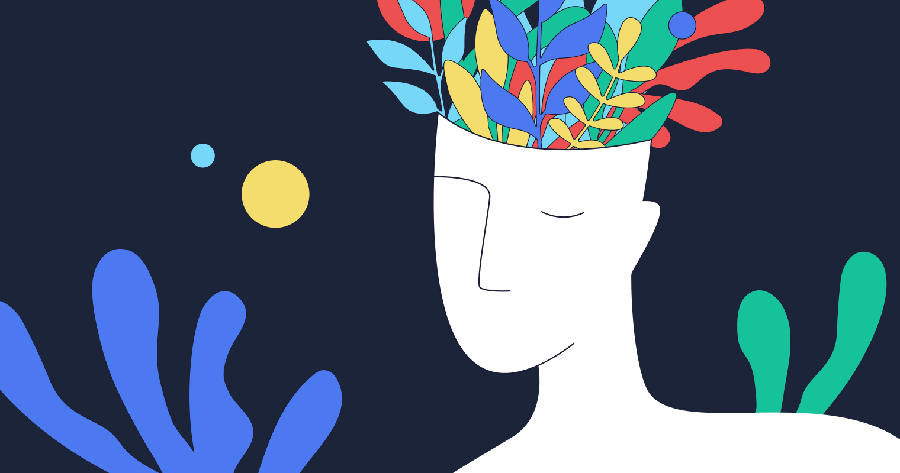

La Salud Mental en la Adolescensia ante el COVID-19
La Salud mental en el COVID-19
26/11/21
Tu Salud Mental es lo primero cuidala
En este blog analizaremos el por que la salud mental en la adolescensia es tan importante y más ahora que estamos
dandole frente a la situación actual en la que vivimos en medio de una pandemia mundial que no afecta solo a los adultos
o niños si no a todos los adolescentes que los obligan a adaptarse a nuevos cambios a los cuales no estamos acostumbrados y
lo mas importante al como darle frente de manera positiva
Desarrollo
Como es casi todos los casos la adolescensia suele ser un proceso bastante complicado o difícil en ciertos casos y hoy
en día la pandemia del COVID-19 lo vuelve un tanto complicado ya que las condiciones en las que vivimos actualmente no son las
óptimas ya que este cambio implicó cambios en nuestra rutina claramente y también nos induce a una nueva forma de buscar
como emplear nuestro tiempo libre.
Un punto importante que todos los adolescentes en el mundo tenemos que tener en cuenta es el punto que no todos somos
tan fuertes como para poder sobrellevar o aguantar este virus que hasta el día de hoy sigue dejando a todo el mundo sin seres queridos
y tenemos que tener conciencia hacia todos ellos.
Motivación
Este tema lo seleccione especialmente por que desde mi perspectiva personal es un tema muy importante y más en estos momentos y
hasta mi punto de vista no se le esta dando la importancia que se merece ya que como cualquier otro tema que derive del desarrollo de
una persona es sumamente importante ya que en el mundo en muchos casos no le hacemos caso a estos pequeños puntos que a largo plazo pueden
tener graves consecuencias.
Imagen representativa de la salud mental en la vida.
Ranking de edades donde el problema puede ser mas grave
29/11/21
Enlistado de edades
En esta lista estan expuestos en un top 10 las etapas en las que se desarrollan los adolescentes y que en
alguna de ellas podría darse esta situación.
A los 10 años
Entre los 10 y 13 años
A los 14 años
Entre los 14 y 17
A los 18 años
Entre los 18 y 21 años
A los 22 años
Entre los 22 y 25 años
A los 26 años
De 26 años en adelante
Imagen representativa de las edades en la salud mental.
Enlistado de páginas donde se puede obtener más información
29/11/21
Enlistado de páginas
A continuación encontraras un listado de páginas donde puedes obtener mas información al respecto sobre el tema de
fuentes confiables y poseen más información.
Me parecio bastante interesante el video ya que no conocia algunos puntos importantes en los cuales hay que tomar acción ya que
son bastante importantes para tomar papel al contribui en una buena salud mental para todo el mundo y es mejor mantenerla
sana en esta situación que estamos viviendo.
En el video se puede apreciar información asociada con el tema que es relaciona con el video de la SEGOB que dice "Mantente ocupado en actividades productivas y positivas, comparte tiempo con la familia,
colabora en las tareas del hogar, practica la tolerancia, solidaridad y respeto." esto no los dan como un consejo a seguir para
mantener una buena salud mental
Investigación
17/01/22
Puntos de la Salud Mental
Primero antes de empezar con todos los puntos que mas adelante trataremos es importante recalcar y tenemos que tener en cuenta que la adolescencia es la etapa de desarrollo y la creación de hábitos tanto sociales y emocionales para lograr el bienestar mental son varios los ejemplos que podemos mencionar los cuales que genera este proceso importante en la adolescencia, como pueden ser el adoptar buenos hábitos de sueño con las horas respetadas, tener salud haciendo ejercicio y mantener relaciones sociales con todo el entorno personal al igual que resolver problemas y situaciones difíciles de forma personal y lo mas importante aprender a gestionar tus emociones de manera responsable.
Son muchos los factores que pueden ser índices de situación de riesgo que en todo momento se sucitán y son múltiples. Ahora bien es importante decir que en cuanto mas son estas alarmas de factores de riesgo que se nos presentan, en un largo plazo su resultado negativo en la salud mental de los adolescentes podría llegar a ser mas grave de lo que parece; ahora al igual que existen puntos que la salud mental genera en nosotros también hay de quien los provoca, que son como por ejemplo el deseo de una mayor autonomía, el querer encajar con tu circulo social y el querer explorar cosas nuevas y no poder hacerlo.
Ahora también existen estos factores que influyen en la creación un poco e ficción dentro de la mentalidad de los adolescentes que en vez de acercarlos y mostrar la verdadera forma de la vida muestran otra cara de la moneda que te vende otra idea completamente distinta a la realidad, como es bien sabido los medios de comunicación es el principal factor de este tipo que contribuye a este tipo de situaciones.
Ahora también un factor que toma posición en esta situación es a forma de vida y las relaciones que llega a tener con sus amistades. También factores para que esto suceda es la violencia y los problemas socioeconómicos.
Los adolescentes que tienden a tener mas riesgo de sufrir estos trastornos de salud mental ya se por alguna causa como la que puede ser la situación de vida, la discriminación, la falta de accesos de apoyo de servicio de calidad.
En este rubro comprende a tipos de adolescentes por llamarlos de esta manera; en ellos están los que viven en lugares en donde hay inestabilidad o se requiere de algún tipo de ayuda humanitaria, también se encuentran los que padecen de enfermedades crónicas, trastornos de aspecto autista, discapacidad intelectual, los embarazos a temprana edad y papas adolescentes, entre otras más.
Trastornos emocionales
¿Que son los trastornos emocionales? primero antes de definir este concepto tenemos que saber que estos trastornos surgen de una manera normal durante la adolescencia y es algo habitual que suceda esto en la adolescencia al igual que podemos ser vulnerables ante la depresión o la ansiedad y hasta quizá muestren irritabilidad, enojo o hasta frustración que también llega a suscitarse en esta etapa de la vida; ahora bien estos trastornos emocionales son un cambio repentino de estado de ánimo como síntoma al igual que arrebatos emocionales, estos síntomas pueden variar según la edad del adolescente, como ejemplo si es más joven llegan a desarrollar síntomas físicos.
¿Cuáles pueden ser las principales causas de esto? según datos de la OMS la depresión es la cuarta principal causa de enfermedad y discapacidad los adolescentes de edades comprendidas entre los 15 y los 19 años, ahora también existe otro trastorno llamado ansiedad que es la novena causa principal en los adolescentes de edad entre 15 y 19 años de edad. Estos trastornos tienen afectaciones colaterales en el rendimiento tanto académico como de forma de asistencia en la forma escolar, en un efecto extremo de este tipo de situación es el suicidio, pero esto es un extremo pero claro según y depende sea tratado es el efecto que puede llegar a tener.
También trataremos los trastornos del Comportamiento Infantil este tipo de trastornos según la OMS es la segunda causa principal de carga de morbilidad en las cuales los adolescentes entre las edades entre 10 y 14 años, y el mismo caso pero se encuentra en la undécima entre las edades de los adolescentes entre los 15 y 19 años de edad. En este grupo de adolescentes también hay más puntos que es importante mencionar son algunos transtornos como pueden ser la deficit de atención junto con hiperactividad, y también comprende el desprecio por las consecuencias que podrían a llegar a tener nuestras acciones y quizá el mas relevante que no siempre lo tomamos en cuenta y que es algo muy común que pueda llegar a pasar a cualquier adolescente, el trastorno de la conducta.
Los trastornos alimentarios ¿Qué es un trastorno alimentario? podemos entender como trastorno alimentario como un suceso que llega a suscitar principalmente en la adolescencia y los inicios de la adultez, ahora es importante mencionar que este trastorno es más común en las mujeres que en los hombres. Algunos estados de alarma que da este trastorno, por mencionar algunos es la bulimia nerviosa, la anorexia nerviosa, entre otras. Ahora es importante recalcar que estos trastornos son tratables, más existen los factores que hacen que perdure este trastorno como pueden ser la depresión y la ansiedad.
Las conductas de riesgo
En este campo si investigamos un poco aparecerán muchas situaciones y factores de riesgo que se pueden llegar a dar en la adolescencia pero tenemos que tener en cuenta algunos y más que importantes o principales los más comunes ya que factores de riesgo en nuestra vida cotidiana tratamos muchos, pero si podemos mencionar los más comunes como son el exceso de sustancias que debido a su exceso es dañino nocivamente para un adolescente, las practicas sexuales sin responsabilidad. Según la OMS estas conductas podrían ser confundidas por el tener una mala salud mental, pero esto tienes consecuencias graves ya que repercute en el tener un bienestar mental.
El uso del alcochol en la adolescencia es muy dañino para la salud más hay índices que indican aproximadamente en esta etapa es mas vulnerable un joven a caer en esta adicción y al igual caer en estos excesos que afectan a una salud mental o más aun su bienestar, estas bebidas son ingeridas en un mayor número por hombres según datos de la OMS y las edades en las que se presenta esto como mas probable es entre 15 y 19 años de edad y de la población total de estos datos un porcentaje , estos datos segun la OMS en 2016.
Al igual que la anterior el uso del tabaco que es un problema severo y mas allá de el daño que puede causar en los adolescentes, el impacto que tiene contra la contaminación de manera impresionante ya que su colilla tarda aproximadamente de 18 meses hasta 10 años en degradarse entonces detengamonos un momento a pensar el daño que nos hace al consumirlo, esto solo como una referencia ya que según datos oficilaes de la OMS la población que comienzé a ingerir estas sustancias es aproximadamente entre los 15 a 16 años. Pongamonos a pensar y segun mismos datos de la OMS dice que la mayoría de los adultos que fuman, prbaron por primera vez el cigarro antes de la mayoría de edad.
Como último punto mencionaremos los actos violentos que lógicamente es una conducta de riesgo como ya antes lo habíamos mencionado como factores de riesgo y lo que implicaba y en lo que afectaba como el bajo rendimiento académico, con regularidad sufra de lesiones, que participe en actos delictuosos como el robo, y con el riesgo de asumir la responsabilidad de sus actos que en el peor de los casos es la muerte tras algún tipo de situación en la que halla sido implicado.
Según la OMS En 2016 la violencia interpersonal fue clasificada como la segunda causa de muerte entre los adolescentes de mayor edad.

Imagen relacionada ala salud mental y sus derechos
 La Salud mental en el COVID-19
La Salud mental en el COVID-19 
 Ranking de edades donde el problema puede ser mas grave
Ranking de edades donde el problema puede ser mas grave 
 Enlistado de páginas donde se puede obtener más información
Enlistado de páginas donde se puede obtener más información